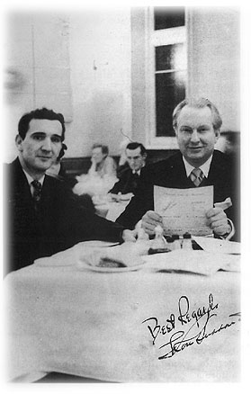
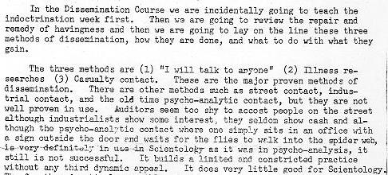
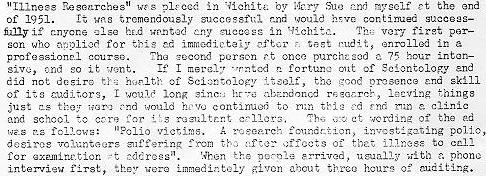
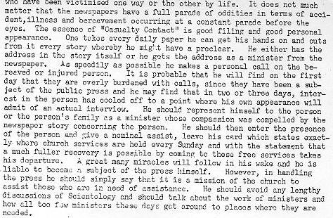
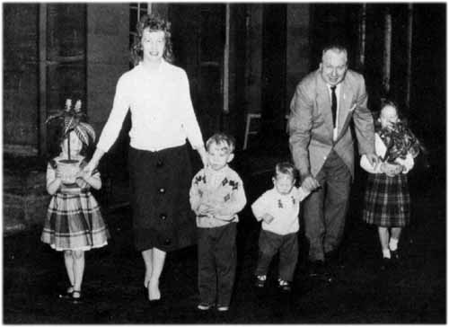

Chapter 13
Apostle of the Main Chance
'A historic milestone in the personal life of L. Ron Hubbard and in the history of Dianetics and Scientology was passed in February 1954, with the founding of the first Church of Scientology. This was in keeping with the religious nature of the tenets dating from the earliest days of research. It was obvious that he had been exploring religious territory right along.' (Mission Into Time, 1973)
 (Scientology's account of the years 1953-59.)
(Scientology's account of the years 1953-59.)
Hubbard had been quietly planning the conversion of Scientology into a religion for more than twelve months, ever since his return from Europe in the autumn of 1953. It made sense financially, for there were substantial tax concessions available to churches, and it made sense pragmatically, for he was convinced that as a religion Scientology would be less vulnerable to attack by the enemies he was convinced were constantly trying to encircle him.
Furthermore, religion was booming in post-war America. All the churches were increasing their membership, there was a new interest in revivalism, epitomized by Billy Graham's spectacular crusades, and even theologians were fostering the concept of the church as integral to contemporary culture, reflected in the popularity of songs like 'I Believe' and epic films like The Ten Commandments. Politicians, too, spoke of 'piety on the Potomac' and President-elect Dwight D. Eisenhower declared in late 1952: 'Our government makes no sense unless it is founded on a deeply felt religious faith - and I don't care what it is!' In 1954 Congress boosted the new piety by adding the phrase 'under God' to the pledge of allegiance.
Hubbard was quick to recognize there was a religious bandwagon rolling and equally quick to leap nimbly aboard. In December 1953, he incorporated three new churches - the Church of American Science, the Church of Scientology and the Church of Spiritual Engineering - in Camden, New Jersey. On 18 February 1954, the Church of Scientology of California was incorporated. Its objects, inter alia, were to 'accept and adopt the aims, purposes, principles and creed of the Church of American Science, as founded by L. Ron
Hubbard'. Another Church of Scientology was incorporated in Washington DC and throughout 1954 Hubbard urged franchise holders around the United States to convert their operations into independent churches. Executives of the Hubbard Association of Scientologists International henceforth described themselves as 'ministers', and some of the more flamboyant even took to wearing clerical collars and pre-fixing their names with 'Reverend'.
At the beginning of 1955, Hubbard moved his headquarters from Phoenix to Washington DC, declaring his belief that the church's constitutional rights were safer under the jurisdiction of Federal, rather than State, courts. Travelling with him to Washington was a veritable family entourage, including his heavily pregnant wife and their two small children, his son Nibs and his wife, Henrietta, also pregnant. On Sunday, 13 February, Mary Sue gave birth to a daughter, Mary Suzette Rochelle Hubbard, her third child in rather less than three years of marriage.
The Hubbards moved into a two-storey house in the leafy Maryland suburb of Silver Spring, just outside the Washington DC metropolitan area, and it was from there that Ron resumed his correspondence with the Communist Activities Division of the FBI. On 11 July 1955, he wrote a maundering three-page letter, about Communists and wicked accountants conspiring with renegade IRS agents to destroy him, so inane that the recipient at the FBI scribbled on it a notation 'appears mental'.[1] Thereafter, the FBI no longer acknowledged communications from Hubbard 'because of their rambling, meaningless nature and lack of any pertinence to Bureau interests'.[2] No doubt somewhat to the Bureau's chagrin, Hubbard was not in the least deterred from writing.
 Two weeks later, on smart new printed notepaper headed 'L. Ron Hubbard
D.D., Ph.D.', he wrote again to say he had received an invitation to go to
Russia. It had come from an 'unimpeachable source' who suggested that as he
was about to be ruined by the IRS he might as well accept the offer. 'It seems
I can go to Russia as an adviser or a consultant and have my own laboratories
and receive very high fees. And it is all so easy because it has already been
ascertained that I could get my passport extended for Russia and all I had to
do was go to Paris and there a Russian plane would pick me up and that would
be that.' He did not wish to reveal the name of his contact, he added,
'because he is a little too highly placed on the [Capitol] Hill'.
Two weeks later, on smart new printed notepaper headed 'L. Ron Hubbard
D.D., Ph.D.', he wrote again to say he had received an invitation to go to
Russia. It had come from an 'unimpeachable source' who suggested that as he
was about to be ruined by the IRS he might as well accept the offer. 'It seems
I can go to Russia as an adviser or a consultant and have my own laboratories
and receive very high fees. And it is all so easy because it has already been
ascertained that I could get my passport extended for Russia and all I had to
do was go to Paris and there a Russian plane would pick me up and that would
be that.' He did not wish to reveal the name of his contact, he added,
'because he is a little too highly placed on the [Capitol] Hill'.
It seemed Hubbard was able to resist blandishments from beyond the Iron Curtain, for through the sweltering summer months in Washington DC he could be found lecturing at the 'Academy of Religious Arts and Sciences', in a ten-roomed house at 1845 R Street, in the north-west section of the city. He was still maintaining a
_______________
1. FBI memo, 11 October 1957
2. FBI memo, 27 February 1957
one-way communication with the FBI and on 7 September, he wrote to complain about the persecution of Scientologists, some of whom he alleged were being mysteriously driven insane, possibly by the use of LSD, 'the insanity producing drug so favoured by the APA [American Psychological Association]'. Another poor wretch, a 'half-blind deaf old man' had been arrested for practising medicine without a licence in Phoenix by a County attorney promising to 'get to the bottom of this thing about Hubbard and Scientology'.
On a personal basis, Hubbard pointed out that it was not uncommon 'to have judges and attorneys mad-dogged about what a terrible person I am and how foul is Scientology . . . All manner of defamatory rumours have been scattered around me, questioning even my sanity . . .'
It certainly was a question in the forefront of the FBI file, although Hubbard was not to know that. He continued: 'I am trying to turn out some monographs on matters in my field of nuclear physics and psychology for the government on the subject of alleviating some of the distress of radiation burns, a project I came east to complete.' He also promised to forward information about the latest brain-washing techniques in Russia.
The horror of 'brain-washing' had been an emotive talking point in the United States ever since the end of the Korean war and the revelation that United Nations prisoners had been brain-washed for propaganda purposes. Timely as always, Hubbard entered the debate by distributing a pamphlet entitled 'Brain-Washing: A Synthesis of the Russian Textbook on Psychopolitics', which he claimed was a transcript of a lecture delivered in the Soviet Union by the dreaded Lavrenty Pavlovich Beria, architect of Stalin's purges.
It was this pamphlet he forwarded in due course to the FBI with a note explaining that it was the Church of Scientology's printing of 'what appeared to be a Communist manual'. The Bureau's Central Research Section examined it and concluded that its authenticity was doubtful, since it lacked documentation of source material, did not use normal Communist words and phrases and contained no quotations from well-known Communist works, as would be expected. Had the Central Research Section been familiar with the works of L. Ron Hubbard, they might have noted certain similarities in the narrative style.
The FBI did not acknowledge receipt of the pamphlet, but this did not dissuade the Hubbard Dianetic Research Foundation of Silver Spring, Maryland, from mailing the pamphlet to influential individuals and organizations around the country with a covering letter claiming that 'authorization' had been received to release the material after the FBI had been supplied with a copy.
While Hubbard was skirmishing with the FBI, he was also tightening his grip on the Scientology movement and urging his followers to take action against anyone attempting to practise Scientology outside the control of the 'church'. He derided apostates as 'squirrels' and recommended merciless litigation to drive them out of business. 'The law can be used very easily to harass, and enough harassment on somebody who is simply on the thin edge anyway, well knowing that he is not authorized, will generally be sufficient to cause his professional decease,' he wrote in one of his interminable bulletins, casually adding, 'If possible, of course, ruin him utterly.'
In the same bulletin he offered the benefit of his advice to any Scientologists unlucky enough to be arrested. They were instantly to file a $100,000 civil damages suit for molestation of 'a Man of God going about his business', then go on the offensive 'forcefully, artfully and arduously' and cause 'blue flames to dance on the courthouse roof until everybody has apologized profusely'. The only way to defend anything, Hubbard wrote, was to attack. 'If you ever forget that, you will lose every battle you are ever engaged in.'[3] It was a philosophy to which he would adhere ardently all his life.
At the end of September, the Hubbards packed their bags once again, closed the house at Silver Spring and departed the United States with their three young children for another extended visit to London. Hubbard had taken a lease on a large apartment in Brunswick House, a mansion block in Palace Gardens Terrace, a few minutes walk from Kensington Gardens. It became, temporarily, the address of the Hubbard Communications Office, which maintained links with embryonic Scientology groups in other countries (satellite churches had already been established in South Africa, Australia and New Zealand).
Hubbard immediately took over the day-to-day running of the Hubbard Association of Scientologists International, which was still operating from its dreary premises at 163 Holland Park Avenue, although it had grown considerably in size. There was now a full-time staff of twenty auditors, most of them young, like Cyril Vosper, who had been a nineteen-year-old biology student when he first read about Dianetics and was a qualified professional auditor by the time he was twenty.
'I had no doubt that Hubbard's arrival in town was a historic event,' he recalled. 'I believed in him totally, believed he was a genius and was convinced he knew a lot more about the human species and the human condition than anyone else. The only reason I had any slight difficulty in accepting that he was the world's greatest human being was that, to English eyes, he didn't look like a Messiah. He used to wear very brash American clothes - loud check jackets and bootlace
_______________
3. HCO Technical Bulletin, Vol. II, 1955
ties and brothel-creepers. It wasn't quite the image we expected. But he gave a number of public lectures around town and was interviewed by the media and was pretty well received. The newspapers at that time were quite complimentary, they viewed him as an oddball who might just have come up with something good.
'Ron presided over the staff meeting at the HASI at five o'clock every afternoon. It was all Christian names at the HASI, everyone called him Ron, but there was no doubt he was absolutely in charge. He wouldn't brook any other input: all the books were written by him, all the policy letters were written by him. No one would ever question anything he said or wrote. I had read The History of Man and I knew, as a biology student, that it was a load of bleeding nonsense but I explained it to myself as an allegorical work. In any case, I could never have said to him, "Now listen, Ron, that's just not true." No one would ever have done that.
'One of the things that began to worry me about Ron was that he was unpredictable. He could be very thoughtful and kind one minute and quite hideous the next. We were auditing about 50 hours a week and I remember one afternoon a girl auditor burst into tears when she was telling Ron about a particularly difficult case she had. He put his arm round her and said, "Jenny, anything we can do for this pre-clear is better than doing nothing. She needs help and a bit of attention and that is what you are giving her. Just keep on doing the same thing you're doing and you will resolve it in due course. You can't expect miracles overnight." That struck me as a very humane and comforting thing to say to her. There was no question he had something to contribute in the psychological area. I mean, just to sit down with someone and listen to them for a couple of hours did them good.
'But then I have also seen him behave in a grotesque fashion. One afternoon during a lecture a woman in the audience was coughing rather badly and he walked to the front of the stage, red-faced and visibly angry, and shouted, "Get that woman out of this lecture hall!" She was one of his most fervent supporters and she was also desperately ill - she died three weeks later of lung cancer.'[4]
 Aside from occasional temper tantrums, Hubbard considered things were going
very well in London. 'I am busy at a headlong rate of speed,' he wrote to
Marilyn Routsong, an aide left behind in Washington to keep an eve on his
interests, 'really got things rolling off over here. Hope to have some films
that will help us before long, and am now dickering around on an international
radio'. He ended the letter with a titbit of information that must have made
Miss Routsong's nerves tingle: 'Just between ourselves, I actually do have a
method of as-ising the atom bomb. Anyway I'm not quite as far away as you
think. Love, Ron.'
Aside from occasional temper tantrums, Hubbard considered things were going
very well in London. 'I am busy at a headlong rate of speed,' he wrote to
Marilyn Routsong, an aide left behind in Washington to keep an eve on his
interests, 'really got things rolling off over here. Hope to have some films
that will help us before long, and am now dickering around on an international
radio'. He ended the letter with a titbit of information that must have made
Miss Routsong's nerves tingle: 'Just between ourselves, I actually do have a
method of as-ising the atom bomb. Anyway I'm not quite as far away as you
think. Love, Ron.'
In the peculiar argot of Scientology, 'as-isness' was a process of
_______________
4. Interview with Cyril Vosper, London, December 1985
making something disappear. What Hubbard was apparently saying was that he was well on the way towards removing nuclear weapons from the face of the earth. However, something must have gone wrong since he would soon be applying his awesome imagination to the problem of dealing with radiation.
The Hubbards' closest friends in London were Ray Kemp, now back home from Phoenix, and his pretty girlfriend, Pam, both of whom worked at the HASI. Hubbard, as a minister of the Church of American Science, performed the ceremony when they married in February 1956, in the lecture room at the HASI, and Mary Sue was Pam's maid of honour. 'Ron and Mary Sue had dinner with us the night before the wedding,' Pam said, 'and Ron told us he had written the ceremony specially for us. He was a very good friend - he even fixed our honeymoon, made arrangements for us to use an apartment in Tangier owned by a friend of his and paid for our air tickets.
'When we got back, we used to see a great deal of them, two or three times a week. Ron would telephone and say, "I'm coming over to dinner and I'm bringing a chicken." Then we would sit up for hours playing Cluedo and the men would start telling stories and there would be lots of laughter. It was a lot of fun - I'd usually end up falling asleep and Mary Sue would go to bed. Their relationship seemed OK, but there never seemed to be a lot of love between them. She was not the affectionate type, she was more efficient than affectionate. They used to have fierce husband and wife domestic arguments.
|
 |
| Hubbard with his friend Ray Kemp on a two-day trip to Ireland during which he hoped to solve the 'Irish problem'. |
At the end of March 1956, Ray Kemp accompanied Hubbard on a trip to Dublin. 'He wanted to see if there was something he could do for Ireland,' Kemp explained. 'He felt that Ireland's troubles were based on the fact that it was a bit like a Third World nation and had never been able to apply the skills of its people. We were there for two or three days and he spent the whole time talking to people. We'd be
_______________
5. Interview with Pam Kemp, Palomar, CA, August 1986
walking down the street and all of a sudden he wasn't there. I'd look back and see him deep in conversation with someone, asking them if they had a job, what their skills were, things like that. Believe it or not, he'd actually run a little process on them there and then and they'd feel better and he'd walk away. His idea was to open a Personal Efficiency Foundation in Dublin to teach people how to apply whatever skills they had got, but I don't think anything ever came of it.'

Back in London, Hubbard applied himself to proselytizing for his fledgling church. Never short of ideas, he told Kemp to try putting an advertisement in the London evening newspapers with a telephone number and the offer, 'I will talk to anyone about anything.' It instantly tapped the deep well of loneliness which exists in every big city and generated an extraordinary response. 'We were inundated with calls,' said Kemp. 'Everyone from potential suicides to a girl who couldn't decide which of three men to marry.'
So successful was this campaign that Hubbard then tried targeting specific, and potentially vulnerable, groups, starting with the victims of one of the most feared diseases of the 'fifties. The classified columns of the evening newspapers soon began carrying the following, apparently innocuous, advertisement: 'Polio victims. A research foundation investigating polio desires volunteers suffering from the effects of that illness to call for examination . . .' The 'research foundation' followed up with similar advertisements aimed at asthmatics and arthritics.
'Casualty Contact' was another thoroughly distasteful recruiting method advocated by Hubbard. He recommended that ambitious auditors looking for new pre-clears should cut out stories in the newspapers about 'people who have been victimized one way or the other by life. It does not much matter whether that victimizing is in the manner of mental or physical injury . . .' Then they should make a call on the bereaved or injured person as speedily as possible, representing themselves as 'a minister whose compassion was compelled by the newspaper story'.By the summer of 1956, Scientology was prospering mightily and so, at last, was its founder. Hubbard's gross receipts for the fiscal year ending June 1956 amounted to $102,604 - a handsome income by any standards.[6] His salary from the Church of Scientology was only $125 a week, but he earned commission from the sale of training processes and E-meters, in addition to substantial royalties from his innumerable books. More than sixty books on Scientology by L. Ron Hubbard were in print by this time and a new one was appearing approximately every two months, usually containing new processes and procedures superseding those currently in use.
_______________
6. Founding Church of Scientology v. US Court of Claims No. 22-61
The church could easily afford the expense of allowing its founder to become an early transatlantic commuter and Hubbard made frequent visits back to Washington during the year, collecting lecture fees on each trip. In November, the Academy of Religious Arts and Sciences (also known as the Academy of Scientology) moved to 1810-1812 19th Street, adjoining grey-brick townhouses with two flights of stone steps leading up to the front door in a tree-lined street of eminent respectability. The Hubbards took a lease on a handsome four-storey brownstone on the other side of the street for their use when they were in Washington.
In March 1957, the Church of Scientology adopted a compensation scheme known as a 'proportional pay plan' under which Hubbard would henceforth receive, in lieu of salary, a percentage of the church's gross income. The effect was dramatic: before the end of the 'fifties the founder of the Church of Scientology would be coining around $250,000 a year, a great deal more than the President of the United States.
By April it seemed that Hubbard had given up his heroic, single-handed attempt to rid the world of nuclear weapons by 'as-ising' the atomic bomb, for in that month he hired the Royal Empire Society Hall in London in order to preside over the 'London Congress on Nuclear Radiation and Health'. The various lectures delivered at this extraordinary event were later condensed into an even more extraordinary book titled All About Radiation and written by 'a nuclear physicist' and 'a medical doctor'.
The doctor was anonymous, but the 'nuclear physicist' was none other than L. Ron Hubbard offering the benefit of his advice with customary scant recourse to the laws of science. He asserted, for example, that a sixteen-foot wall could not stop a gamma ray whereas a human body could, an assertion later described by an eminent radiologist as 'showing complete and utter ignorance of physics, nuclear science and medicine'.[7] In line with his philosophy that most illnesses were caused by the mind, Hubbard avowed, 'The danger in the world today in my opinion is not the atomic radiation which may or may not be floating through the atmosphere but the hysteria occasioned by that question.' Radiation, he added, was 'more of a mental than a physical problem'.
Fortunately, however, no one needed to worry about radiation, since Hubbard had devised a vitamin compound called 'Dianazene' (after his first child by Mary Sue?) which provided protection: 'Dianazene runs out radiation - or what appears to be radiation. It also proofs a person against radiation to some degree. It also turns on and runs out incipient cancer. I have seen it run out skin cancer. A man who didn't have much liability to skin cancer (only had a few moles)
_______________
7. Report of Board of Inquiry into Scientology, State of Victoria, Australia, 1965
took Dianazene. His whole jaw turned into a raw mass of cancer. He kept on taking Dianazene and it disappeared after a while. I was looking at a case of cancer that might have happened.'
The doctor, writing under the pseudonym Medicus, confirmed in his section of the book that 'some very recent work by L. Ron Hubbard and the Hubbard Scientology Organization has indicated that a simple combination of vitamins in unusual doses can be of value. Alleviation of the remote effects and increased tolerance of radiation have been the apparent results . . .'
The Food and Drugs Administration in the United States was inclined, after studying a copy of All About Radiation, to disagree. FDA agents swooped on the Distribution Center Inc, a Scientology company in Washington, seized 21,000 Dianazene tablets and destroyed them, alleging that they were falsely labelled as a preventative treatment for 'radiation sickness'.
In July 1957, Hubbard addressed the 'Freedom Congress' at the Shoreham Hotel in Washington; during the lecture he carried out a christening ceremony for the first time. Its function, he explained, was simply to help get the thetan oriented in its new body and informality was the keynote, as was made evident in a booklet titled 'Ceremonies of the Founding Church of Scientology'. After introducing the child to its parents and godparents, the ceremony proceeded: 'Here we go. (To the child): How are you? All right. Now your name is ---. You got that? Good. There you are. Did that upset you? Now, do you realize that you're a member of the HASI? Pretty good, huh?' Thereafter the parents and godparents were introduced to the child and the ceremony concluded: 'Now you're suitably christened. Don't worry about it, it could be worse. OK. Thank you very much. They'll treat you all right.'
His image as a family man was a pose, since he evinced little interest in his own children. Nibs rarely managed to please his father and his sister, Catherine, then twenty-one, had started working for the organization in Washington but saw little of Hubbard. She married a Scientologist in 1956 which would have pleased her father except he did not like the man; the marriage could not survive his disapproval and she divorced in 1957. Hubbard made no attempts to see Alexis.
The same month as the Freedom Congress, the Central Intelligence Agency opened a file, No. 156409, on L. Ron Hubbard and his organization. CIA agents trawled through police, revenue, credit and property records to try and unravel Hubbard's tangled corporate affairs. It was a task of herculean difficulty, for the Church of Scientology was a cryptic maze of ad hoc corporations. The printed notepaper of the Academy of Scientology gave only a hint of its labyrinthine structure - on the left-hand side of the page was a list of no
less than seventeen associated organizations, ranging from the American Society for Disaster Relief to the Society of Consulting Ministers.
Agents traced a considerable amount of property owned either by Hubbard, his wife, son, or one of the daunting number of 'churches' with which they were associated, but the report quickly became bogged down in a tangle of names and addresses: 'The Academy of Religious Arts and Sciences is currently engaged as a school for ministers of religion which at the present time possesses approximately thirty to forty students. The entire course consists of $1500 to $1800 worth of actual classroom studies . . . The public office is located at 1810-12 19th Street N.W. The corporations rent the entire building . . .
'The Hubbard Guidance Center, located at 2315 15th Street, N.W., occupies the entire building which consists of three floors and which was purchased by the SUBJECT Organization. The center also rents farm property located somewhere along Colesville Road in Silver Spring, Maryland, on a short-term lease. The center formerly operated a branch office at 8609 Flower Avenue, Silver Spring, Maryland. In addition to the Silver Spring operation, the center has a working agreement with the Founding Church of Scientology of New York, which holds classes at Studio 847, Carnegie Hall, 154 West 57th Street, New York City. Churches of this denomination number in excess of one hundred in the United States . . .'
One agent was assigned the thankless task of reading through all Hubbard's published work at the Library of Congress in order to gain an 'insight' into Scientology. 'Hubbard's works', he noted glumly, 'contain many words, the meaning of which are not made clear for lay comprehension and perhaps purposely so.'
The District of Columbia Income Tax Division reported that the 'church' had applied for a licence to operate as a religion in Washington DC probably in an attempt to claim tax-free status, and the Personal Property Division reported that it was having difficulty persuading the church to produce its records so that a personal property tax could be levied. Repeated telephone calls had produced nothing but excuses as to why the records could not be produced.
In the end, the CIA file could do no more than chronicle a multitude of vague suspicions; it certainly uncovered no hard evidence of wrong-doing and it revealed curiously little about the remarkable career of the founder of the Founding Church of Scientology. 'Dr Hubbard', it noted simply, 'received a Doctor of Divinity degree in 1954 and throughout his adult career has been a minister.'
The increasingly obvious success of Scientology from 1957 onwards unquestionably prompted federal agencies to keep a closer eye on Hubbard. The Washington Field Office of the FBI, for example, maintained an extensive file which included film and sound recordings
as well as photographs and doggedly noted every example of Hubbard's exuberant irreverence to authority.
When the Academy of Scientology delivered twelve thousand feet of film to a Washington laboratory for processing, outraged technicians forwarded it to the FBI for investigation, alleging that the speaker on the film was anti-American. The film covered six one-hour lectures by Hubbard, during which he made a crack about the Government developing the hydrogen bomb in order to 'kill more people faster'.
He also talked about his experience, when 'he was a policeman', in dealing with the criminal mind. 'The FBI thinks there's such a thing as the criminal mind - always a big joke,' he said. 'There's a criminal mind and a non-criminal mind. The FBI have never shown me a non-criminal mind. Of course, these are terrible things to say - simply comments on J. Edgar who is an awfully good guy, stupid, but awfully good.' The Washington Field Office, which perhaps lacked Hubbard's sense of humour, solemnly took note of this analysis of their director and diligently forwarded to him the advice that L. Ron Hubbard thought he was 'stupid'.[8]
Largely unaware of the extent of federal interest in his activities, Hubbard had remained in Washington after the Freedom Congress to lecture on a more permanent basis at the Academy of Scientology. Mary Sue and the children joined him from London and they all moved into the brownstone house on 19th Street. Although she was soon pregnant once more, Mary Sue was appointed 'Academy Supervisor' and remained a powerful figure in the organization. On 6 June 1958, she gave birth to her fourth child - a son, Arthur Ronald Conway Hubbard. Like his other brothers and sisters, Arthur emerged into the world with a wispy topping of bright red hair.
Through most of 1958 Hubbard lectured in Washington at the Academy. In one famous lecture, taped for posterity and marketed for profit, he recounted the colourful 'story of Dianetics and Scientology', interlacing the resumé with anecdotes and jokes, all delivered with a fine sense of timing and generating roars of laughter from an appreciative audience. It was essentially the story of his own life as it had come to be compiled in his mind, with extraordinary adventures tagged on to a slender framework of facts.
 'The story starts when I was 12 years old', he began, 'and I met one of the
great men of Freudian analysis, Commander Thompson, a great man and
explorer. He was a commander in the US Navy. His enemies called him Crazy
Thompson and his friends called him Snake Thompson. He was a personal friend
of Freud and had no kids of his own. On a big transport on a long cruise he
started to work me over. He had a cat by the name of Psycho with a crooked
tail. The cat would do tricks and the first thing he did was teach me to train
cats . . .'
'The story starts when I was 12 years old', he began, 'and I met one of the
great men of Freudian analysis, Commander Thompson, a great man and
explorer. He was a commander in the US Navy. His enemies called him Crazy
Thompson and his friends called him Snake Thompson. He was a personal friend
of Freud and had no kids of his own. On a big transport on a long cruise he
started to work me over. He had a cat by the name of Psycho with a crooked
tail. The cat would do tricks and the first thing he did was teach me to train
cats . . .'
_______________
8. FBI Airtel, 7 August 1958
He continued the story in similar vein. Finding himself in Asia while still a teenager, he discovered he was able to 'operate in the field of Asian mysticism'; in college he was 'never in class' but got through by persuading other students to take his mathematics examinations while he did their psychology papers. It was easy, he said. He simply read the textbooks the night before and sat the exam next morning. During the Prohibition years he knocked around with newspaper reporters and drank bathtub gin acquired from the 'very best gangsters'.
In 1938, having 'associated rather thoroughly with twelve different native cultures, not including the people in the Bronx', he identified the urge to survive as the common denominator of all forms of life. In hospital at the end of the war, 'recuperating from an accumulation of too much wartime Scotch and overdoses of lead', he continued his research. 'I found out that by taking off one collar ornament I became an MD. They don't let anybody in a medical library except doctors but by stopping off with one collar ornament and for a couple of bucks having a marine on crutches come by and say, "Good morning, doctor", I was able to get in a year's study at the medical library.'
After leaving hospital he bought a yacht, took a cruise to the West Indies, then used his wartime back pay to finance further research - 'I went down to the middle of Hollywood, rented an office, wrapped a towel round my head and became a swami.'
Perhaps the most revealing thing Hubbard said about himself during the lecture was a comment on one of Commander Thompson's favourite little aphorisms. It appeared that the Commander used to tell Ron, 'If it's not true for you, it's not true.' It aligned with his own personal philosophy, Hubbard explained, 'because if there is anyone in the world calculated to believe what he wants to believe it is I'. Never did L. Ron Hubbard speak a truer word.
In October, Hubbard flew back to London to preside over a six-week 'Advanced Clinical Course' at HASI's smart new West End offices in Fitzroy Street. Cyril Vosper was one of the students on the course hoping for a Bachelor or Doctorate of Scientology and he noticed a marked change in Hubbard's appearance: 'The flashy American clothes were gone. Now he was wearing grey tweed suits and silk shirts. He looked like a well-dressed professional gentleman and there was a feel of money and class about the whole thing.'[9]
Much of the course, Vosper recollected, was devoted to students investigating each other's past lives. As Hubbard made frequent mention in his lectures of past lives on other planets, with zapp guns, flying saucers, mother ships, galactic federations, repeller beams and suchlike, Vosper reported that many of the past lives excitedly revealed during the course sounded like 'Flash Gordon' adventures.
_______________
9. Interview with Vosper
Nibs, who was one of the instructors, proved to be enormously resourceful in the past lives area. 'When a student was having difficulty in making his past life gel,' said Vosper, 'Nibs would helpfully fill in bits. Students knew that unless they could bring forth a past life with full recall, pain, emotion, full perception, the lot, they would be regarded as something less than real Scientologists. There was a good deal of rivalry as to who could dig up the most notable or extraordinary past life. Jesus of Nazareth was very popular. At least three London Scientologists claimed to have uncovered incidents in which they were crucified and rose from the dead to save the world. Queen Elizabeth I, Walter Raleigh and the venerable Bede were also popular. Funnily enough, I never met anyone who claimed to know anything about Attila the Hun, Genghis Khan or Pontius Pilate.'
|
 |
| Hubbard as genial family man. From the left Suzette (4), his wife Mary Sue, Quentin (5), Arthur (1) and Diana (7). All were to suffer in various ways. (Photo Source Ltd) |
Hubbard returned to Washington for Christmas, but in the New Year he began making plans to move back to London with his family. Pam and Ray Kemp wrote to say that they were moving and that their house in North London, on the Finchley Road in Golders Green, would be available if Ron was looking for somewhere to live. The Hubbards - Ron, Mary Sue, Diana, aged six, Quentin, five, Suzette, four and Arthur, eight months - arrived in London at the end of February and agreed to rent the Kemps' house in Golders Green.
'My daughter Suzanne was born on Ron's birthday,' said Pam Kemp. 'Ron came over with a beautiful, bright orange, angora shawl for me. He said everyone brings presents for the baby but everyone forgets it is the mother that has been doing all the work so he was bringing a present for the mother. That was typical of him.
'It was also typical of him that he stiffed us for the rent and he stiffed the greengrocer. Before they moved in, the greengrocer on the other side of the road asked us if he could trust the new tenants and we said "Of course." Ron proceeded to run up a huge bill which he never paid. And he never paid us any rent. We asked him dozens of times for the money. He told us to ask Mary Sue and she always said they didn't have any money.
'Then one day Ron came over on his motorcycle, very excited and pleased with himself. He said, "Guess what I've done?"'[10]
The Kemps were dumbfounded by their friend's news. He announced that he had bought the Maharajah of Jaipur's estate in Sussex.
_______________
10. Interview with Kemp